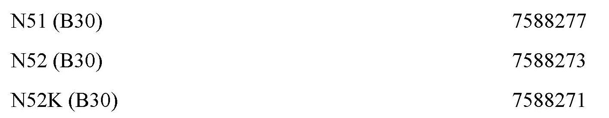
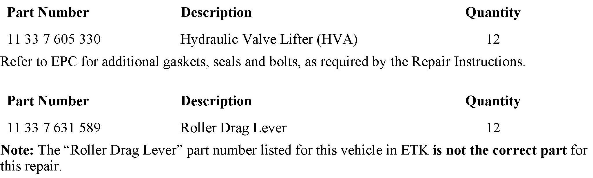
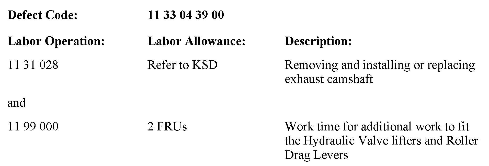
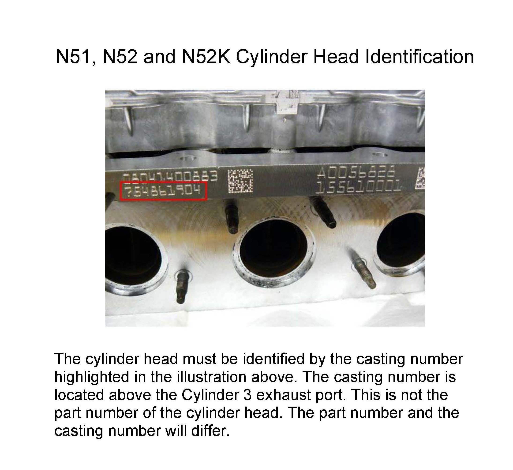

Engine - Intermittent Hydraulic Valve Adjuster Noise
SI B11 09 07Engine
March 2013
Technical Service
This Service Information bulletin supersedes SI B11 09 07 dated March 2012.
[NEW] designates changes to this revision
SUBJECT
Intermittent Hydraulic Valve Adjuster (HVA) Noise
MODEL
All E82, E83, E88, E85, E86, E60, E61, E70, E90, E91, E92 and E93 vehicles with N51, N52 or N52K engines produced approximately up to November 31st 2008; refer to cylinder head casting identification attachment.
SITUATION
An occasional ticking or rattling noise from the camshaft hydraulic valve lifters (HVA) may occur during cold engine starts, due to frequent short-distance driving, or the noise may occur for an extended period of time even though the engine is at operating temperature.
Improved parts were phased into production beginning on 10/1/2008 and fully implemented on November 31st 2008.
CORRECTION
Do not perform the bleeding procedure that was previously provided in SI B11 09 07 which has now been deleted.
All vehicles produced between 10/1/2008 and 11/31/2008 must have their cylinder head casting numbers identified before hydraulic valve lifter (HVA) and roller drag lever replacement, due to staggered implementation. Refer to the attachment for the casting number location. Vehicles produced afier 11/31/2008 have already been fitted with improved parts. Vehicles produced prior to 10/1/2008 will require the new parts.

Improved Casting Numbers
A cylinder head casting number that does not match the above will require one of the following repair solutions performed, based on the vehicle repair history.
Vehicles that have already had 12 exhaust hydraulic valve lifters installed during a previous repair:
If the vehicle has already been fitted with 12 exhaust hydraulic valve lifter (HVA) P/N 11 33 7 605 330 during a previous repair, then only install 12 exhaust roller drag levers P/N 11 33 7 631 589 to rectify the complaint. Refer to Repair Instruction REP 11 33 050, Removing and installing/replacing all rocker arms. Only the exhaust camshaft has to be removed in order to replace the hydraulic valve lifters and/or roller drag levers. Do not remove or replace any intake camshaft valve train components.
First-time complaint and no repair parts have been installed:
If the vehicle has not been fitted with 12 exhaust hydraulic valve lifters (HVA) P/N 11 33 7 605 330 during a prior repair, then the vehicle will need to be fitted with 12 exhaust hydraulic valve lifters (HVA) P/N 11 33 7 605 330 and 12 exhaust roller drag levers P/N 11 33 7 631 589 to rectify the complaint. Refer to Repair Instruction REP 11 33 050, Removing and installing/replacing all rocker arms. Only the exhaust camshaft has to be removed in order to replace the hydraulic valve lifters and/or roller drag levers. Do not remove or replace any intake camshaft valve train components.

[NEW] PARTS INFORMATION
Only request and invoice P/N 11 33 7 631 589 as specified and listed in this Service Information bulletin.
Performing a part number look-up in ETK by VIN or model will result in the wrong part being invoiced and installed.
[NEW] WARRANTY INFORMATION

Covered under the terms of the BMW New Vehicle/SAV Limited Warranty or the BMW Certified Pre-Owned program.
Labor operation code 11 31 028 is a Main labor operation. If you are already using a Main labor code for another repair, use the Plus code labor operation 11 31 528 instead.
Refer to KSD2 for the corresponding flat rate unit (FRU) allowance. Enter the Chassis Number, which consists of the last 7 digits of the Vehicle Identification Number (VIN). Click on the "Search" button, and then enter the applicable flat rate labor operation in the FR code field.
Even though work time labor operation code 11 99 000 ends in "000," it is not considered a Main labor operation.

ATTACHMENTS
view PDF attachment B110907_Head_Identification.